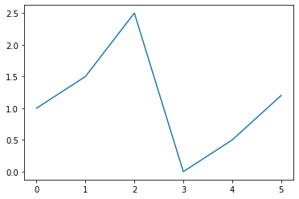
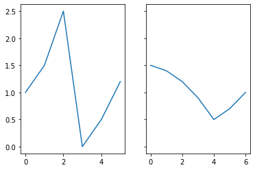
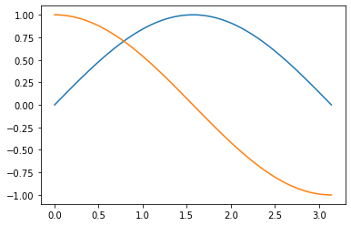
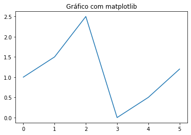
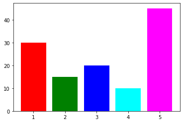
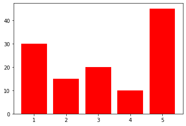
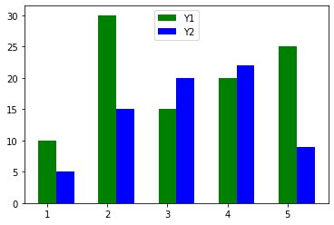
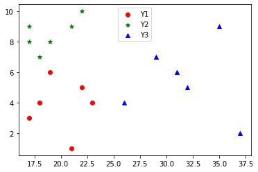
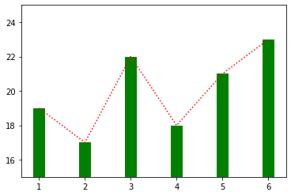

Introdução a visualização com Matplotlib
Introdução
O matplotlib é uma biblioteca para gerar gráficos ( plots ) em Python, inclusive em 3 dimensões. Abaixo um exemplo de como plotar um gráfico com matplotlib. Primeiramente importamos a interface baseada em estados ( pyplot ) do matplotlib. O padrão da comunidade é usar o alias plt :
from matplotlib import pyplot as plt
import math
import numpy as np
Então, definimos uma sequencia de valores (em uma lista) a serem impressos. Por padrão
plt.plot([1.0, 1.5, 2.5, 0.0, 0.5, 1.2])

No comando acima, passamos uma lista com os valores no eixo y. Os valores do eixo x são inferi- dos pelo índice dos valores na lista. Note que no Jupyter, para cada célula de código que gera uma figura, a figura é exibida automati- camente abaixo da célula. No Spyder há a aba plots (no mesmo local do explorador de variáveis). Para um script executado normalmente (sem um ambiente como o Jupyter ou Spyder) é necessário chamar o comando plt.show.
plt.plot([1.0, 1.5, 2.5, 0.0, 0.5, 1.2])
plt.show()

Fora do Jupyter, plt.show() executará uma janela com ferramentas para a manipulação da posição ezoomdo gráfico. Também haverá uma opção para salvar em disco o gráfico como figura.
Padrões de uso
Há dois principais padrões de uso: API pyplot e a API orientada a objetos.
API pyplot
matplotlib.pyplot (lembre-se que geralmente usamos o alias plt ) é uma coleção de funções em es- tilo comandos inspirado no MATLAB. Cada função faz alguma alteração em uma figura (e.g. criar a figura, adicionar área de plotagem, gerar plots, adicionar rótulos). Esta API é recomendada para gráficos interativos e casos simples. O exemplo acima usa a API pyplot.
API orientada a objetos
Se você necessita mais controle sobre seus plots a API orientada a objetos é mais indi- cada. Na maioria dos casos é criada uma figura e um ou mais eixos ( Axes ) usando mat- plotlib.pyplot.subplots (ou plt.subplots com o uso do alias). Observe o exemplo abaixo:
fig, ax = plt.subplots(1, 1)
ax.plot([1.0, 1.5, 2.5, 0.0, 0.5, 1.2])

O exemplo acima usa a API orientada a objetos para plotar o mesmo plot anterior. O comando plt.subplots retorna uma figura e um eixo, ax , (ou uma lista de eixos) criado(s). É uma maneira conveniente de criar umlayoutde vários plots, incluindo a figura que os agrega, em um único comando. Os principais argumentos de plt.subplots são dados conforme a descrição abaixo: matplotlib.pyplot.subplots(nrows=1, ncols=1, sharex=False, sharey=False, squeeze=True, subplot_kw=None, gridspec_kw=None, **fig_kw)
- nrows , ncols : Número de linhas e colunas
- sharex , sharey : Controla o compartilhamento dos eixos x e y, respectivamente.
Aceita os valores:
- True ou ‘all’: eixos x e/ou y são compartilhados em todos os subplots.
- False ou ‘none’: Os eixos são independentes em todos os subplots.
- ‘row’: todos os subplots na mesma linha tem e/os eixos x ou y compartilhados
- ‘col’: todos os subplots na mesma coluna tem os eixos x e/ou y compartilhados.
Observe abaixo a criação de uma figura com dois subplots:
fig, axes = plt.subplots(1, 2)
axes[0].plot([1.0, 1.5, 2.5, 0.0, 0.5, 1.2])
axes[1].plot([1.5, 1.4, 1.2, 0.9, 0.5, 0.7, 1.0])

O mesmo exemplo, mas com o eixo y compartilhado:
fig, axes = plt.subplots(1, 2, sharey=True)
axes[0].plot([1.0, 1.5, 2.5, 0.0, 0.5, 1.2])
axes[1].plot([1.5, 1.4, 1.2, 0.9, 0.5, 0.7, 1.0])

Controlando ambos os eixos (x e y)
O comando plot aceita que definimos tanto os valores do eixo x como do y. Podemos passar as duas listas para plot , devemos tomar cuidado que as listas devem ter o mesmo número de elementos. Observe o exemplo abaixo:
fig, ax = plt.subplots(1, 1)
X = [1.0, 3.0, 4.0, 7.0, 9.0]
Y = [5.0, 6.0, 7.0, 6.5, 2.0]
ax.plot(X, Y)

Várias linhas em um mesmo subplot
Podemos adicionar quantas linhas forem necessárias a um mesmo subplot.
fig, ax = plt.subplots(1, 1)
X = np.linspace(0, 3.1415, 100)
Y1 = list(map(lambda x: math.sin(x), X))
Y2 = list(map(lambda x: math.cos(x), X))
ax.plot(X, Y1)
ax.plot(X, Y2)

Componentes do gráfico
Legendas
Abaixo adicionamos legendas ao exemplo acima, facilitando a leitura do gráfico. Para isso pas- samos o argumento label para cada plot , especificando o rótulo da legenda daquela linha. Us- amos o método legend para adicionar a legenda e definir sua localização no subplot. loc define a posição da legenda e aceita os seguintes valores:
- ‘best’
- ‘upper right’
- ‘upper left’
- ‘lower left’
- ‘lower right’
- ‘right’
- ‘center left’
- ‘center right’
- ‘lower center’
- ‘upper center’
- ‘center’
fig, ax = plt.subplots(1, 1)
X = np.linspace(0, 3.1415, 100)
Y1 = list(map(lambda x: math.sin(x), X))
Y2 = list(map(lambda x: math.cos(x), X))
ax.plot(X, Y1, label='Seno')
ax.plot(X, Y2, label='Cosseno')
ax.legend(loc='upper right')
Título do subplot
O título é adicionado com o método set_title na API orientada a objetos e com plt.title na API pyplot.
fig, ax = plt.subplots(1, 1)
ax.plot([1.0, 1.5, 2.5, 0.0, 0.5, 1.2])
ax.set_title("Gráfico com matplotlib")

plt.plot([1.0, 1.5, 2.5, 0.0, 0.5, 1.2])
plt.title("Gráfico com matplotlib")

Rótulo (ou título) dos eixos
Na API orientada a objetos , adicionamos rótulos do eixo x e y com set_xlabel e set_ylabel , re- spectivamente
fig, ax = plt.subplots(1, 1)
ax.plot([1.0, 1.5, 2.5, 0.0, 0.5, 1.2])
ax.set_xlabel("Eixo x")
ax.set_ylabel("Eixo y")

Na API pyplot , adicionamos rótulos do eixo x e y com xlabel e ylabel , respectivamente
plt.plot([1.0, 1.5, 2.5, 0.0, 0.5, 1.2])
plt.xlabel("Eixo x")
plt.ylabel("Eixo y")

Título da figura
Usamos o método suptitle do objeto Figure (primeiro retorno da função plt.subplots , o qual chamamos fig ) para adicionar um título para a figura. Observe o exemplo abaixo:
fig, (ax1, ax2) = plt.subplots(2, 1, sharex=True)
X = np.linspace(0, 10, 100)
Y1 = list(map(lambda x: math.sin(x), X))
Y2 = list(map(lambda x: math.cos(x), X))
ax1.plot(X, Y1)
ax1.set_title("Seno")
ax2.plot(X, Y2)
ax2.set_title("Cosseno")
fig.suptitle("Seno e Cosseno")

No exemplo acima também estamos compartilhando o eixo x.
Gráficos y vs x (linhas)
Já vimos que utilizamos plot para adicionar um gráfico de linha a um eixo. Na realidade, plot faz uma gráfico de y versus x , que por padrão é uma linha.
O terceiro argumento, fmt , de plot é uma string que controla algumas características deste gráfico. Ele é formado por até 3 partes:
fmt = ‘[marcador][linha][cor]’
Os principais marcadores são:
- ‘.’ ponto;
- ‘,’ pixel;
- ‘o’ círculo;
- ‘v’, ‘ˆ’, ‘<’, ‘>’ triângulo para baixo, cima, esquerda e direita, respectivamente;
- ‘s’ quadrados
- ‘p’ pentágonos
- ‘+’ sinal de +
- ‘x’ sinal x
- ‘D’ diamante
- ‘*’ estrela
As linhas podem ser:
- ‘-’ linha sólida
- ‘–’ tracejado
- ‘-.’ traço-ponto
- ‘:’ pontilhada E as cores :
- ‘b’ azul (blue)
- ‘g’ verde (green)
- ‘r’ vermelho (red)
- ‘c’ ciano
- ‘m’ magenta
- ‘y’ amaremo (yellow)
- ‘k’ preto
- ‘w’ branco (white) Nos exemplos abaixo usamos os dados já gerados acima em X e Y.
fig, ax = plt.subplots(1, 1)
ax.plot(X, Y1, ':m')

fig, ax = plt.subplots(1, 1)
ax.plot(X, Y1, '*g')
fig, ax = plt.subplots(1, 1)
ax.plot(X, Y1, 'r')

fig, ax = plt.subplots(1, 1)
ax.plot(X, Y1, '--b')

Gráfico de barras
Usamos o método bar para adicionar um gráfico de barras que gera uma barra para cada elemento da lista Y. Observe que no eixo ax2 usamos tick_label para alterar o valor dos ticks de cada posição no eixo x para a sigla dos estados.
fig, (ax1, ax2) = plt.subplots(1, 2)
X = [1, 2, 3, 4, 5]
Y = [30, 15, 20, 10, 45]
ax1.bar(X, Y)
rotulos = ['SC','PR', 'RS','SP','RJ']
ax2.bar(X, Y, tick_label=rotulos)
ax2.set_xlabel("Estado")

Para gráfico de barras horizontais usamos barh :
fig, (ax1, ax2) = plt.subplots(1, 2)
X = [1, 2, 3, 4, 5]
Y = [30, 15, 20, 10, 45]
ax1.barh(X, Y)
rotulos = ['SC','PR', 'RS','SP','RJ']
ax2.barh(X, Y, tick_label=rotulos)
ax2.set_xlabel("Estado")
O argumento color permite definir as cores de cada barra individualmente com uma lista dos nomes das cores desejadas:
fig, ax = plt.subplots(1, 1)
X = [1, 2, 3, 4, 5]
Y = [30, 15, 20, 10, 45]
ax.bar(X, Y, color=['red','green','blue','cyan','magenta'])

Ou de todas as barras passando apenas uma string com o nome da cor desejada.
fig, ax = plt.subplots(1, 1)
X = [1, 2, 3, 4, 5]
Y = [30, 15, 20, 10, 45]
ax.bar(X, Y, color='red')

Usamo o argumento bottom para empilhar barras. Observe que também usamos o argumento label para definir o nome de cada barra na legenda.
fig, ax = plt.subplots(1, 1)
X = [1, 2, 3, 4, 5]
Y1 = [30, 15, 20, 10, 45]
Y2 = [10, 5, 5, 10, 15]
ax.bar(X, Y1, label='Y1', color='orange')
ax.bar(X, Y2, label='Y2', color='green', bottom=Y1)
ax.legend(loc='upper left')

Ajustando a espessura da barra
No exemplo abaixo modificamos a espessura das barras com o terceiro argumento de bar
fig, ax = plt.subplots(1, 1)
X = [1, 2, 3, 4, 5]
Y = [30, 15, 20, 10, 45]
ax.bar(X, Y, 0.35)

fig, ax = plt.subplots(1, 1)
X = [1, 2, 3, 4, 5]
Y = [30, 15, 20, 10, 45]
ax.bar(X, Y, 0.1)

Gráfico de barras agrupados.
O primeiro argumento de bar controla a posição no eixo x da barra. Assim, com uma lógica bem simples podemos agrupar vários gráficos de barra.
ESPESSURA = 0.3
X1 = [1, 2, 3, 4, 5]
X2 = [x + ESPESSURA for x in X1]
print(X1)
print(X2)
[1, 2, 3, 4, 5]
[1.3, 2.3, 3.3, 4.3, 5.3]
Y1 = [10, 30, 15, 20, 25]
Y2 = [5, 15, 20, 22, 9]
rotulos = ['SC','PR', 'RS','SP','RJ']
fig, ax = plt.subplots(1, 1)
ax.bar(X1, Y1, ESPESSURA, color='g', label='Y1')
ax.bar(X2, Y2, ESPESSURA, color='b', label='Y2')
ax.legend(loc='upper center')

Gráfico de dispersão (scatter)
Para gerar um gráfico de dispersão usamos plt.scatter. Passamos uma lista com o componente x e outra com o componente y da coordenada de cada ponto. Assim como nos gráficos de linha e barra, podemos ajustar o título da legenda com label e a cor com color. Usamos marker para definir o marcador de cada ponto (ver os marcadores usados por plot acima).
X1 = [19, 17, 22, 18, 21, 23]
Y1 = [6, 3, 5, 4, 1, 4]
X2 = [18, 17, 22, 19, 21, 17]
Y2 = [7, 8, 10, 8, 9, 9]
X3 = [26, 32, 31, 37, 29, 35]
Y3 = [4, 5, 6, 2, 7, 9]
fig, ax = plt.subplots(1, 1)
ax.scatter(X1, Y1, color='r', marker='o', label='Y1')
ax.scatter(X2, Y2, color='g', marker='*', label='Y2')
ax.scatter(X3, Y3, color='b', marker='^', label='Y3')
ax.legend(loc='upper center')

Ajustamos o tamanho de cada ponto do gráfico de dispersão com o terceiro argumento, s.
fig, ax = plt.subplots(1, 1)
ax.scatter(X1, Y1, 100, color='r', marker='o', label='Y1')
ax.scatter(X2, Y2, 200, color='g', marker='*', label='Y2')
ax.scatter(X3, Y3, s=300, color='b', marker='^', label='Y3')
ax.legend(loc='upper center')
Podemos ajustar o tamanho de cada ponto interindividual. Para isso passando uma lista com o tamanho desejado de cada ponto para o terceiro argumento, s.
fig, ax = plt.subplots(1, 1)
S = [100, 200, 400, 900, 200, 500]
ax.scatter(X1, Y1, s=S, color='r', marker='o', label='Y1')
ax.legend(loc='upper center')

Gráfico de pizza (pie)
Usamos o método pie para plotar um gráfico de pizza.
estados = ['SC','PR', 'RS']
pop = [6.73, 11.08, 11.29] # Em milhões
fig, ax = plt.subplots(1, 1, facecolor='w')
ax.pie(pop, labels=estados, autopct='%1.f%%', counterclock=False, startangle=90)

Em plt.subplots , usamos facecolor=‘w’ para configurar o fundo da imagem como branco. Em pie , usamos autopct para formatar o texto com os valores dentro das fatias da pizza. O trecho ‘%1.f’ configura como número sem casas decimais, ‘%%’ adiciona um símbolo de ‘%’ no final do número. É necessário utilizar dois símbolos pois o símbolo ‘%’ é um carácter especial e necessita ser escapado. startangle define o angulo para iniciar o gráfico, no nosso caso 90 é no topo. O valor padrão, 0, é a direita:
fig, ax = plt.subplots(1, 1, facecolor='w')
ax.pie(pop, labels=estados, autopct='%1.f%%', counterclock=False)
counterclock determina a direção de preenchimento:
fig, ax = plt.subplots(1, 1, facecolor='w')
ax.pie(pop, labels=estados, autopct='%1.f%%', counterclock=True)

Podemos fazer alguns outros ajuste como ‘explodir’ o gráfico com explode e adicionar sombra com shadow : explode deve ser uma lista, cada item determinando um valor de deslocamento de cada fatia da pizza.
fig, ax = plt.subplots(1, 1, facecolor='w')
explodir = [0, 0.2, 0] # destacar o estado do Paraná
ax.pie(pop, labels=estados, autopct='%1.f%%', counterclock=True,explode=explodir, shadow=True)

Misturando vários tipos de gráficos
Muitas combinações de gráficos podem ser realizadas. Veja o exemplo abaixo com um gráfico de barras e de linhas em um único eixo.
fig, ax = plt.subplots(1, 1)
X = [1, 2, 3, 4, 5, 6]
Y = [19, 17, 22, 18, 21, 23]
ax.plot(X, Y, ':r')
ax.bar(X, Y, 0.25, color='g')

Definindo os ticks dos eixos
No gráfico acima o menor valor é 17 e o maior 23, vamos focar no intervalo 15 à 25. Usamos o método set_ylim para definir os limites dos ticks do eixo y e set_xlim para o eixo x
fig, ax = plt.subplots(1, 1)
X = [1, 2, 3, 4, 5, 6]
Y = [19, 17, 22, 18, 21, 23]
ax.plot(X, Y, ':r')
ax.bar(X, Y, 0.25, color='g')
ax.set_ylim(15, 25)

Além do intervalo, podemos definir exatamente quais valores de ticks queremos com o método set_yticks (e set_xticks para o eixo x ):
fig, ax = plt.subplots(1, 1)
X = [1, 2, 3, 4, 5, 6]
Y = [19, 17, 22, 18, 21, 23]
ax.plot(X, Y, ':r')
ax.bar(X, Y, 0.25, color='g')
ax.set_ylim(15, 25)
ax.set_yticks([15, 20, 22.5, 25])

Podemos usar o método set_yticklabels ( set_xticklabels para o eixo x ) para definir exatamente o texto de cada tick.
fig, ax = plt.subplots(1, 1)
X = [1, 2, 3, 4, 5, 6]
Y = [19, 17, 22, 18, 21, 23]
ax.plot(X, Y, ':r')
ax.bar(X, Y, 0.25, color='g')
ax.set_ylim(15, 25)
ax.set_yticks([15, 20, 22.5, 25])
ax.set_yticklabels(["baixo", "médio", "alto", "crítico"])
12 Recursos
O matplotlib é extremamente versátil e completo. Neste material tivemos apenas uma intro- dução a alguns dos seus principais gráficos. Para mais informações consulte sua documentação: https://matplotlib.org/3.3.0/contents.html
E também sua galeria de exemplos: https://matplotlib.org/3.1.1/gallery/index.html
13 Referências
John Hunt. Advanced Guide to Python 3 Programming. Undergraduate Topics in Computer Science. Springer, 2019.
Comunidade do matplotlib. Documentação. Disponível em https://matplotlib.org/3.3.0/contents.html